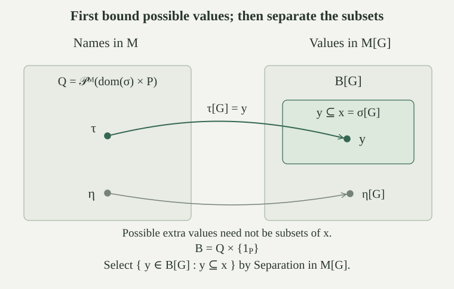

Let \(M\) be an externally countable transitive set model of ZFC, let \(P,\le,1_P\in M\) be a forcing order, and let \(G\subseteq P\) be \(M\)-generic. Put \(M[G]=\{\tau[G]:\tau\in M\text{ is a }P\text{-name}\}\), using the name-value construction. All model assertions use actual membership.
A ground-model name below means a \(P\)-name belonging to \(M\). We use the forcing theorem for each fixed ordinary membership-language formula. It supplies a defining formula inside \(M\) for forcing that particular formula, and a condition in \(G\) witnessing every truth in \(M[G]\). Assertions about Separation and Replacement are schemes, one proof for each formula; no global truth predicate is assumed.
The structure \(M[G]\) is a nonempty transitive set satisfying Extensionality, Foundation, Empty Set, Pairing, Union and Infinity.
These are the structural-axiom conclusions proved for every filter. In particular the pair name evaluates to the exact pair, and the union name uses a common stronger condition for the outer and inner attachments, giving the exact union. Transitivity supplies actual members for Extensionality and Foundation, and the old set \(\omega\) witnesses Infinity. Genericity is additional information used in the proofs of the remaining axioms.
Fix a formula \(\varphi(x,\bar z)\), a name \(\sigma\), and parameter names \(\bar\tau\). The ground-model name
has value exactly \(\{x\in\sigma[G]:M[G]\models\varphi(x,\bar\tau[G])\}\). In the displayed definition, \(p\) forces the whole conjunction. Consequently \(M[G]\) satisfies every Separation instance.
Forcing this fixed conjunction is definable inside \(M\). Separation there produces \(\rho\in M\). Its possible children are all names in \(\operatorname{dom}(\sigma)\), so it is a \(P\)-name.
If \(x\in\rho[G]\), write \(x=\pi[G]\) with \(p\in G\) and \((\pi,p)\in\rho\). Semantic forcing gives both \(x\in\sigma[G]\) and \(\varphi(x,\bar\tau[G])\), proving one inclusion.
Conversely let \(x\in\sigma[G]\) satisfy the formula. Evaluation supplies \(\pi\in\operatorname{dom}(\sigma)\) with \(x=\pi[G]\). The conjunction \(\pi[G]\in\sigma[G]\land\varphi(\pi[G],\bar\tau[G])\) is true. The truth lemma supplies \(p\in G\) forcing this conjunction. Thus \((\pi,p)\in\rho\) and \(x\in\rho[G]\). This proves equality and the asserted Separation instance for arbitrary parameters in the extension.
ZF proves the following Collection principle for every fixed formula \(R(i,y)\): for a set \(I\), there is a set \(S\) such that
It therefore holds inside \(M\), including when the witnesses are ground-model names satisfying a fixed forcing condition.
Separate \(I_0=\{i\in I:\exists y\,R(i,y)\}\). For each \(i\in I_0\), let \(\alpha_i\) be the least ordinal \(\alpha\) with some \(y\in V_\alpha\) satisfying \(R(i,y)\). A witness has a rank and belongs to some hierarchy stage, so the least ordinal exists. Its defining property is unique and first-order expressible using the definable cumulative hierarchy.
Replacement collects the ordinals \(\alpha_i\) into a set. Let \(\beta\) be their supremum, or zero if \(I_0\) is empty. Since \(\alpha_i\le\beta\), each relevant index has a witness in \(V_\beta\). Put \(S=\{y\in V_\beta:\exists i\in I_0,\ R(i,y)\}\), using Separation. This set contains a witness for every relevant index. The construction collects all appropriate candidates in a rank bound; it does not select arbitrary individual witnesses from a class.
Fix a formula \(\varphi(x,y,\bar z)\) and names \(\sigma,\bar\tau\). Suppose that in \(M[G]\), every \(x\in\sigma[G]\) has exactly one \(y\) satisfying \(\varphi(x,y,\bar\tau[G])\). There is a ground-model set \(S\) of names such that every one of these actual outputs belongs to \((S\times\{1_P\})[G]\).
Inside \(M\), use indices \((\pi,p)\in\operatorname{dom}(\sigma)\times P\). Apply to the definable relation saying that \(\mu\) is a \(P\)-name and \(p\Vdash\varphi(\pi,\mu,\bar\tau)\). Restricting the collected set to names gives \(S\in M\) with
Here and throughout this implication, \(\mu\) ranges over names of \(M\). Define the name \(B=S\times\{1_P\}\in M\); it has value \(\{\mu[G]:\mu\in S\}\).
For an actual \(x\in\sigma[G]\), choose a representing \(\pi\in\operatorname{dom}(\sigma)\). Its unique output has the form \(\nu[G]\) for some ground-model name \(\nu\). The truth lemma gives \(p\in G\) forcing \(\varphi(\pi,\nu,\bar\tau)\). The collection property supplies \(\mu\in S\) with the same condition forcing \(\varphi(\pi,\mu,\bar\tau)\). Since \(p\in G\), the actual value \(\mu[G]\) satisfies that formula. Uniqueness of the output implies \(\mu[G]=\nu[G]\). Hence the output belongs to \(B[G]\), as claimed.
The structure \(M[G]\) satisfies every Replacement instance.
Fix an instance with the hypotheses of , and let \(B[G]\) be its supplied bound. The already established Separation scheme forms
Every required output belongs to the bound and is selected; every selected value is an actual output. Thus \(Y\in M[G]\) is exactly the replacement range. This reasoning is valid for every fixed formula and every tuple of extension parameters. The bounding name was allowed to contain additional values, since Separation removes them.
Fix a ground-model name \(\sigma\). Let \(Q=\mathcal P^M(\operatorname{dom}(\sigma)\times P)\), the power set computed in \(M\), and let \(B=Q\times\{1_P\}\). Every member of \(Q\) is a name, \(B\) is a name in \(M\), and every subset of \(\sigma[G]\) which belongs to \(M[G]\) is a member of \(B[G]\).
Every \(\tau\in Q\) consists of pairs whose children belong to \(\operatorname{dom}(\sigma)\), hence are names. It is therefore a name; bounding the ranks of these children makes this explicit in the name hierarchy. The same holds internally in \(M\), so \(B\) is a ground-model name and \(B[G]=\{\tau[G]:\tau\in Q\}\).
Let \(\mu[G]\subseteq\sigma[G]\), with \(\mu\) a ground-model name. Define in \(M\)
Definability and Separation give \(\tau\in M\), and its displayed subset relation puts it in \(Q\). If \(x\in\tau[G]\), an active attachment and semantic forcing give \(x\in\mu[G]\).
Conversely let \(x\in\mu[G]\). Since \(\mu[G]\subseteq\sigma[G]\), some \(\pi\in\operatorname{dom}(\sigma)\) has \(x=\pi[G]\). The truth lemma for \(\pi[G]\in\mu[G]\) gives \(p\in G\) forcing \(\pi\in\mu\). Thus \((\pi,p)\in\tau\), so \(x\in\tau[G]\). This proves \(\tau[G]=\mu[G]\), placing the given subset in \(B[G]\).
The structure \(M[G]\) satisfies Power Set. For \(x=\sigma[G]\), its internal power set has exactly the members \(y\in M[G]\) with \(y\subseteq x\).
Take \(B[G]\) from . Separation in \(M[G]\) forms \(\{y\in B[G]:y\subseteq\sigma[G]\}\). The subset test is bounded, so transitivity makes it agree with the actual subset relation. Every extension subset belongs to the bound by the lemma and is selected, while every selected member is such a subset. This is precisely the relativized Power Set axiom.
The construction uses the old internal power set \(Q\) of a different set, namely possible name attachments. It does not assume that \(M\) already contains all subsets of \(\sigma[G]\), or that the extension contains every ambient subset.

For every ground-model name \(\sigma\), there are an ordinal \(\alpha\in M\) and a function \(f\in M[G]\) with domain \(\alpha\) whose range contains \(\sigma[G]\).
Choice in \(M\) well-orders \(\operatorname{dom}(\sigma)\), giving an enumeration \((\pi_\gamma)_{\gamma<\alpha}\) by an ordinal \(\alpha\). Use the specified ordered-pair name to form in \(M\)
Its exact evaluation is \(\{(\gamma,\pi_\gamma[G]):\gamma<\alpha\}\). Thus \(f=\dot f[G]\in M[G]\) is a function on \(\alpha\). Every \(x\in\sigma[G]\) is the value of some child \(\pi\in\operatorname{dom}(\sigma)\), so it occurs in this range. Different children can have the same value, and inactive children may contribute values outside \(\sigma[G]\). Only containment of \(\sigma[G]\) in the range is claimed.
The structure \(M[G]\) satisfies the axiom of choice.
All ZF axioms have now been established in \(M[G]\). Given \(x=\sigma[G]\), take the function \(f:\alpha\to M[G]\) from , with \(x\subseteq\operatorname{ran}(f)\). Work inside \(M[G]\). For each \(z\in x\), the set \(\{\gamma<\alpha:f(\gamma)=z\}\) is nonempty and has a least member. Separation and Replacement define the function \(h\) selecting this least member.
If \(h(z)=h(w)\), applying \(f\) gives \(z=w\); hence \(h:x\to\alpha\) is injective. Pulling back the ordinal order along \(h\) well-orders \(x\). This proves that every set can be well-ordered, which implies Choice by the well-ordering formulation. The proof uses the actual function name for the whole child enumeration; it does not presume that the active children can be selected inside \(M\).
Under the stated countable transitive ground-model and genericity hypotheses, \(M[G]\) is an externally countable transitive set model of ZFC, \(M\subseteq M[G]\), \(G\in M[G]\), and \(M[G]\) has exactly the ordinals of \(M\).
The check names, canonical filter name, and transitivity and countability give the inclusions and structural properties. The name-rank argument gives equality of ordinals.
Combine the structural axioms with Separation, Replacement, Power Set, and Choice. Each schema instance uses its own fixed forcing-defining formula. Together these establish all ZFC axioms in the actual-membership structure on \(M[G]\).
The theorem constructs an extension from the assumed model and filter. It does not construct the assumed transitive ZFC-model from a bare consistency statement.
If \(N\) is any transitive ZF-model with \(M\subseteq N\) and \(G\in N\), then \(M[G]\subseteq N\). Thus \(M[G]\) is the least such model under inclusion. This applies to set models and, formula by formula, to definable transitive class models under the class-model convention.
Every ground-model name \(\tau\in M\) belongs to \(N\), and so do \(P\) and \(G\). The name-evaluation recursion can therefore be performed inside \(N\). The absoluteness of this unique recursion identifies its internal output with the actual \(\tau[G]\). Hence every such value belongs to \(N\), proving \(M[G]\subseteq N\).
The extension itself is a transitive ZF-model containing \(M\) pointwise and containing \(G\) as an element, by the preceding theorem. It therefore belongs to the class of models being compared, so the inclusion just proved is exactly the stated leastness. No intersection of models is needed to construct it.
For the Cohen order and an \(M\)-generic \(G\), the explicitly named sequence \(g=\bigcup G\) belongs to \(M[G]\setminus M\), while \(M[G]\) is a countable transitive ZFC-model with the same ordinals as \(M\).
The Cohen graph name evaluates exactly to \(g\), placing it in \(M[G]\). Dense disagreement requirements make it different from every old binary sequence. Apply for the model and ordinal conclusions. No assertion about which cardinals are preserved follows merely from equality of ordinals.
The extension satisfies Power Set and contains the actual \(\omega\). Does it follow that it contains every subset of \(\omega\) available in the ambient universe?
No. The Power Set axiom quantifies over the sets of the model. Its power-set object has exactly the subsets of \(\omega\) which themselves belong to \(M[G]\). Since \(M[G]\) is externally countable, this is an externally countable family, whereas the ambient \(\mathcal P(\omega)\) is uncountable by Cantor's theorem. Some ambient subsets are therefore missing.
Inside \(M[G]\), its power-set object is still uncountable. An external enumeration is not an available internal enumeration, just as in the internal and external countability distinction. The bounding-name and Separation proof established the internal axiom, preserving these quantifier domains.